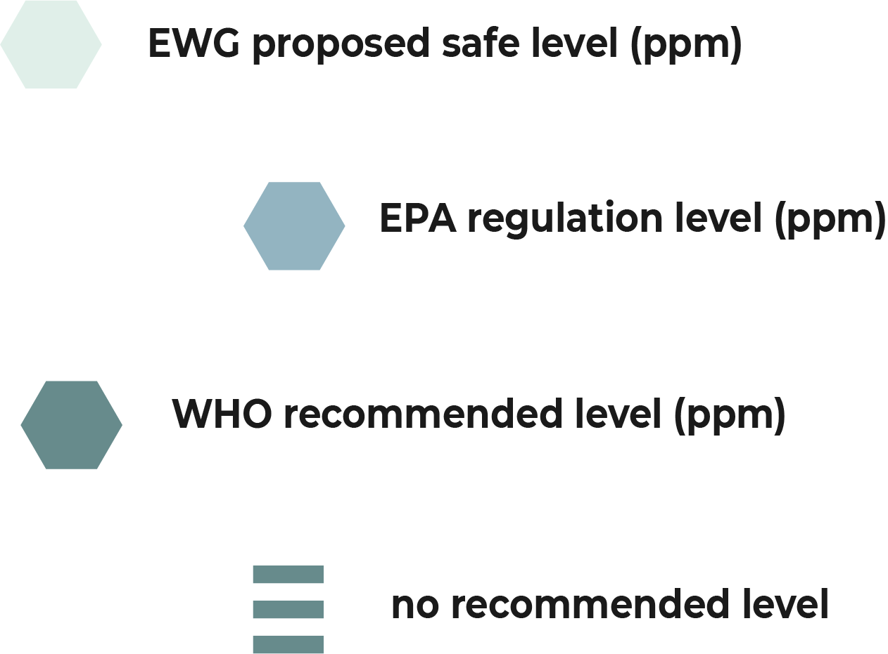

In the US, the EPA regulates all public drinking water (tap water).
The EPA, EWG, and WHO all have different standards when it comes to the level of contaminants deemed acceptable in drinking water.
Here's a quick look at just a handful of the contaminants found in drinking water across the country.
PFOS
Per- and Poly-fluorinated substances are used to create products that resist heat, oil, stains, grease and water. They are also used in some fire-fighting products.
Where it comes from:
- industrial by-product, or by unintended spills
What it does:
- may effect the endocrine and immune systems
- may increase risk of some cancers
29
states above health guideline levels
7,700,000
individuals affected
Arsenic
Arsenic is a contaminant found primarily in....
Nitrates
Nitrates are a contaminant found primarily in....